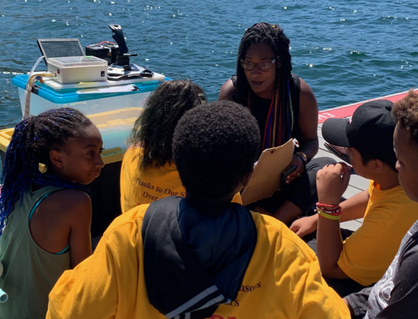

Profiles of
Black Marine Scientists
Dr. Dawn Wright
Favorite Publication: Wright, D.J. (2017). Swells, soundings, and sustainability, but... here be monsters.
 "As per what Coach Don Haskins said to his Texas Western basketball players, in the film Glory Road: “Shut them up! … [Get in the game, stay in the game, Win!] Your coaches and teammates are here for you!"
"As per what Coach Don Haskins said to his Texas Western basketball players, in the film Glory Road: “Shut them up! … [Get in the game, stay in the game, Win!] Your coaches and teammates are here for you!"
Rayna Nolen
 Rayna Nolen (she/her/hers) is currently studying the abundance (in water, biota and sediments) and effects of different persistent chemical pollutants (PFASs, PAHs, PCBs, Dioxins) in Galveston Bay as a Ph.D. student at Texas A&M University at Galveston.. She has loved the ocean and had a passion for conservation for as long as she can remember.She hopes to inspire the next generation of scientists to follow their dreams and fight for what they believe in, even when times get hard or they feel like giving up.
Rayna Nolen (she/her/hers) is currently studying the abundance (in water, biota and sediments) and effects of different persistent chemical pollutants (PFASs, PAHs, PCBs, Dioxins) in Galveston Bay as a Ph.D. student at Texas A&M University at Galveston.. She has loved the ocean and had a passion for conservation for as long as she can remember.She hopes to inspire the next generation of scientists to follow their dreams and fight for what they believe in, even when times get hard or they feel like giving up.

Lashanti Jupp
Favorite Publication: Peter Case et al. (2015). Rethinking Environmental Leadership: The Social Construction of Leaders and Leadership in Discourses of Ecological Crisis, Development, and Conservation
 "The ocean isn’t what separated us, it’s what connects us to each other and to nature.”
"The ocean isn’t what separated us, it’s what connects us to each other and to nature.”
“She believes the first step in conservation is breaking the myth that humans are separate from nature; humans play a key role in every ecosystem. She aspires to reconnect people with nature by saving the world, one ocean at a time, with one conversation at a time."
Dr. Dijanna Figueroa
Dijanna Figueroa has made a career of exploring the mysteries of the deep. Dr. Figueroa holds a bachelor’s degree in Marine Biology from UCLA and a PhD in Marina Science from UC Santa Barbara. She was featured in James Cameron’s documentary Aliens of the Deep, which follows Cameron and NASA scientists as they explore the some of the deepest parts of the ocean and learn about the unique life forms that inhabit those spaces. Her research on the thermal physiology of hydrothermal vent animals was featured in the film. Recently, Figueroa has become an advocate for STEAM education—adding art and design to the science, technology, engineering, and math equation. She’s spent more than two decades teaching STEAM to grades K–8, formerly served as global director of the Muse School National Geographic Society’s Green STEAM program and has advisory roles with many STEM/STEAM nonprofits. She was recently featured on MTV’s Women Crush Wednesdays Women in STEM series. She currently teaches middle school science at St. Matthew's Parish School and runs programs that teach students how to fly drones, scuba dive and build underwater robots. If that isn’t enough, Figueroa is the director of the Lucas Scholars STEM program, a community based social justice and equity program designed to engage young people in science, engineering, design, and art. She loves the ocean and is committed to making ocean science accessible to all people.
- © 2020
- Design: HTML5 UP